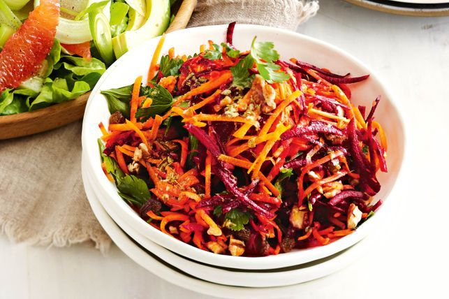

Carrot and Beetroot Slaw

Description
A delicous bowl of coleslaw made of carrot and beetroot with a fenel seed dressing
Ingredients
- 4 large carrot
- 4 beetroot (300g each ) washed, trimmed, peeled
- 1/2 cup rough cut pecans
- 2 tbsp sultana
- 2 cups fresh parsley leaves
~Fennel Dressing~
- 1 1/2 tsp fennel seeds
- 2 tsp Dijon mustard
- 1/4 cup apple cider vinegar
- 1 1/2 tbsp extra virgin olive oil
Method
- Whisk mustard, crushed fennel seeds, vinegar and oil in bowl add salt and pepper
- Grate carrot and beetroot place in seperate bowls
- Add pecans, sultanas and parsley to carrot, pour dressing and toss to combine. Add beetroot and toss gently